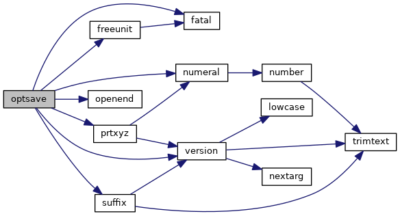
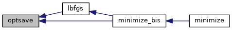

|
Tinker-HP v1.3
|
|
Tinker-HP v1.3
|
Go to the source code of this file.
Functions/Subroutines | |
| subroutine | optsave (ncycle, xx) |
| "optsave" is used by the optimizers to write imtermediate coordinates and other relevant information; also checks for user requested termination of an optimization More... | |
| subroutine optsave | ( | integer | ncycle, |
| real*8, dimension(*) | xx | ||
| ) |
"optsave" is used by the optimizers to write imtermediate coordinates and other relevant information; also checks for user requested termination of an optimization
| no | params |
Definition at line 24 of file optsave.f90.
References fatal(), freeunit(), numeral(), openend(), prtxyz(), suffix(), and version().
Referenced by lbfgs(), and minimize_bis().


 1.8.5
1.8.5